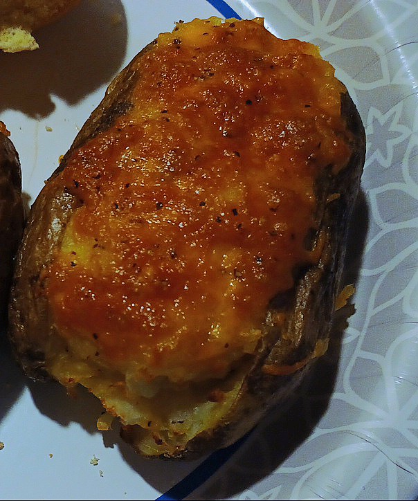

Cheesy Twice Baked Potato
Home

Description
This is by far my favorite way to eat potatoes. This rich and delicious recipe gives you a crispy skin potato, filled and topped with your favorite cheese.
You can also stuff it with meats or veggies if you like. It's super easy to make, and is oven and air fryer friendly.
Ingredients
- Large baking potato
- About 1/2 cup of your favorite cheese, shredded
- 1 tbsp Canola oil, or other high heat oil of your choosing
- 1 tbsp Butter
- Salt and Pepper to taste
Steps
- Wash your potato, and then using whatever method you prefer, bake it until it is fork tender.
- Once the potato is baked, slice it open down the middle, and scoop the insides out into a bowl.
- Take the oil and gently rub it onto the skin of the potato, so as it maintains its original shape. Season skin with salt and pepper, if desired. Set aside.
- To the bowl of potatoes, add the butter and about half the cheese. You can also season the mixure with salt and pepper if you would like. Mash it together and mix until smooth.
- Fill the potato skin with the mixture, leaving the top of the potato slightly open.
- Top the potato with the remaining cheese.
- Bake the potato again. If using an oven, use the low broil setting, and remove the potato when the cheese has browned on top. If using an air fryer, set it to 400 degrees Fahrenheit and bake it for about 10 minutes.
- Serve the potato and enjoy!